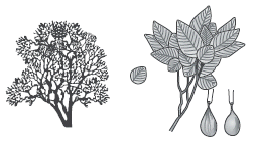
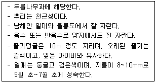
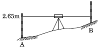
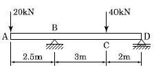
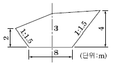
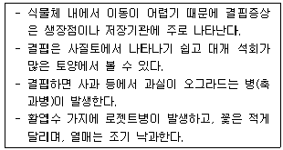

조경산업기사 (2014-03-02 기출문제)
1과목: 조경계획 및 설계
1. S.Gold의 레크리에이션의 접근방법 5가지 분류에 해당되지 않는 것은?
- 자원접근방법
- 활동접근방법
- 경제접근방법
- 토지이용접근방법
(정답률: 84%)

2. 깊이 방향으로 연속적인 지반의 저항을 측정하는 방법으로서 그 조작방법에 따라서 정적인 것과 동적인 것으로 구분되는 지질조사 방법은?
- 토층보링(boring)
- 암반보링(boring)
- 토양단면조사
- 사운딩(sounding)
(정답률: 72%)
3. 도시 오픈스페이스(open space)의 기능 설명으로 옳지 않은 것은?
- 도시민들에게 여가활동, 스포츠, 휴식 등을 위한 공간을 제공한다.
- 화재, 지진 등의 재해 시 도시민들이 신속 하고 안전하게 대피할 수 있는 피난처로 사용 된다.
- 공원과 녹지로 구성되어 있기 보다는 주로 운동장이나 도로 등에 인공적 요소와 함께 구성되어 있다.
- 자투리땅을 활용, 텃밭 등이 제공되어 도시농업을 가능 하게 한다.
(정답률: 68%)
4. 도시공원은 그 기능 및 주제에 의하여 생활권 공원과 주제공원으로 세분화된다. 다음 중 성격이 다른 하나는?
- 근린공원
- 수변공원
- 묘지공원
- 체육공원
(정답률: 75%)
5. 운전시 눈높이는 보행시 눈높이와 다르다. 운전시 각종표지판을 잘 볼 수 있는 적당한 높이는?
- 1.07~1.2m
- 1.5~1.7m
- 2.07~2.3m
- 2.5~3.⑤m
(정답률: 72%)
6. 지방자치단체의 장은 다른 법률에 의하여 공원, 관광단지, 자연휴양림 등으로 지정되지 아니한 지역 중에서 생태적 경관적 가치 등이 높고 자연탐방 생태교육 등을 위하여 활용하기에 적합한 장소를 대통령령이 정하는 바에 따라 무엇을 지정할 수 있는가?
- 경관지구
- 보전관리지역
- 자연휴식지
- 도시녹화지역
(정답률: 48%)
7. 형상수(形象樹: topiary)의 기원에 해당되는 것은?
- 정원관리인의 노예 우두머리
- 정원수를 전정하는 노예 우두머리
- 정원의 석조를 시공하는 우두머리
- 정원식물 중 화훼류를 심는 우두머리
(정답률: 77%)
8. 다음 식물 중 자미(紫微)라 불렸던 것은?
- 배롱나무
- 목련
- 철쭉
- 치자나무
(정답률: 77%)
9. 조선시대 궁궐 조경 수법의 특징에 속하지 않는 것은?
- 후원(後園)의 발달
- 다정(茶庭)의 발달
- 경사지의 화계(花階)처리
- 굴뚝, 담장 등의 수식·미화처리
(정답률: 90%)
10. 조선시대에 외국사신을 맞이하던 객관(客館)에 해당하지 않는 것은?
- 모화관(慕華館)
- 순천관(順天館)
- 태평관(太平館)
- 남별궁(南別宮)
(정답률: 65%)
11. 서원 전면의 하천에 위치하는 유상대(流觴臺)는 고운이 태안현감으로 재임시 계류상에 대를 조성하여 유상곡수로 음풍영월하던 장소로써 후세에 감운정이 건립된 서원은?
- 도산서원
- 무성서원
- 소수서원
- 옥산서원
(정답률: 50%)
12. 조선시대에 애용된 전통적 조경수목의 특징이라고 볼 수 없는 것은?
- 감나무, 복숭아나무 등의 과목(果木)이 선호되었다.
- 수종과 식재장소의 선택에 풍수설의 영향을 많이 받았다.
- 모란, 산수유, 작약 등 화목(花木)이 애용되었다.
- 외래종은 배제하고 한국 고유의 자생종만을 식재하였다.
(정답률: 86%)
13. 로마시대에 있었던 집합광장(集合廣場)은?
- 포름(Form)
- 아고라(Agora)
- 아크로폴리스(Acropolis)
- 스토아(Stoa)
(정답률: 78%)
14. 서양 중세의 수도원 정원에서 장식목적으로 만들어진 정원은?
- 초본원(herb garden)
- 과수원(orchard)
- 유원(pleasunce)
- 주랑식중정(cloister garden)
(정답률: 75%)
15. 다음 제 3각법에 대한 설명으로 옳은 것은?
- 정면도는 평면도 위에 그린다.
- 배면도는 지면도 아래에 그린다.
- 좌측면도는 정면도의 우측에 위치한다.
- 눈 → 투상면 → 물체의 순서가 된다.
(정답률: 76%)
16. 다음 중 색상대비 효과가 가장 약한 것은?
- 벚꽃을 배경으로 한 살구꽃
- 향나무 가운데의 붉은 단풍나무
- 잔디밭 가운데의 붉은 장미꽃
- 활짝 핀 백목련 가운데의 자목련 꽃
(정답률: 92%)
17. 표제란에 기입할 사항이 아닌 것은?
- 도면 명칭
- 도면번호
- 기업체명
- 도면치수
(정답률: 65%)
18. 레크레이션 계획의 접근방법 중에서 공간 혹은 시설들의 사화적･생태적인 최소･충분･적정 수준의 공간적 기준을 고려하는 방법은?
- 인구비례법
- 이용자 - 자원 계획방법
- 한계수용능력 방법
- 면적비율법
(정답률: 75%)
19. 다음 중 자전거 이용시설의 구조･시설 기준에 관한 기준으로 틀린 것은?
- 설계속도는 자전거 통행 도로의 종류에 따라 30~50km/hr의 범위 내로 한다.
- 자전거도로의 차선은 중앙 분리선은 노란색, 양 측면은 흰색으로 표시한다.
- 투수가 되지 않는 자전거도로의 포장면에는 물이 고이지 아니하도록 1.5% 이상 2.0% 이하의 횡단경사를 설치하여야 한다.
- 자전거도로의 시설한계는 자전거의 원활한 주행을 위하여 폭은 1.5m 이상으로 하고, 높이는 2.5m 이상을 기본으로 한다.
(정답률: 68%)
20. 어린이공원의 유희시설에 가장 적당한 색채는?
- 적색이나 황색 등의 난색 계통
- 순백색 계통
- 청색 계통
- 흑(검정)색 계통
(정답률: 90%)
2과목: 조경식재
21. 다음 중 과(科)명과 식물명이 바르게 연결된 것은?
- 현삼과 - 개오동
- 벽오동과 - 벽오동
- 능소화과 - 참오동
- 현삼과 - 꽃개오동
(정답률: 84%)
22. 자작나무과의 낙엽활엽소교목으로 주로 중부 이남의 해안가 산지에 자생하는 수목은?

- 박달나무
- 소사나무
- 물오리나무
- 참개암나무
(정답률: 65%)
23. 공원에 인접해 있는 주택지를 차폐하려고 한다. 벤치에 앉아서 관망을 할 때, 벤치에서 주택까지의 거리는 50m, 주택의 높이는 3m일 때, 식재하려고 하는 위치까지의 거리는 20m 지점을 정하였다. 이 때 수목의 높이는 얼마가 좋은가? (단, 벤치에 앉아 있는 경우 눈의 높이는 110cm이다.)
- 1.85m
- 1.86m
- 1.90m
- 1.95m
(정답률: 59%)
24. 꽃이 무성화로만 이루어진 수종은?
- 나무수국
- 돈나무
- 수국
- 백당나무
(정답률: 63%)
25. 다음 중 수피에 코르크가 잘 발달하는 수목은?
- 향나무
- 졸참나무
- 황벽나무
- 푸조나무
(정답률: 61%)
26. 정원수의 수형에 가장 예민하게 영향을 미치는 인자는?
- 수분
- 영양분
- 광선
- 품종
(정답률: 82%)
27. 벼과(科)의 정수식물로 수질정화 기능이 가장 강한 종은?
- 갈대
- 큰고랭이
- 생이가래
- 개연꽃
(정답률: 78%)
28. 조경식재의 기능을 건축적, 공학적, 기상학적, 미적으로 구분할 때 기상학적 이용효과에 해당하는 것은?
- 대기 정화작용
- 섬광조절
- 태양복사열 조절작용
- 조류 및 동물유인
(정답률: 82%)
29. 지상의 줄기가 일 년 넘게 생존을 지속하며 목질화 되어 비대성장을 하는 만경목(蔓莖木)에 해당하지 않는 것은?
- 마삭줄, 담장이덩굴
- 인동덩굴, 능소화
- 송악, 으름덩굴
- 작약, 멀꿀
(정답률: 83%)
30. 다음 중 목련과(科) 수종에 대한 설명으로 틀린 것은?
- 태산목은 상록활엽교목이다.
- 목련은 중국원산이고 백목련은 한국원산이다.
- 함박꽃나무, 백합나무는 모두 꽃보다 잎이 먼저 난다.
- 일본목련은 5월에 잎이 핀 다음 꽃이 가지 끝에 한개씩 달리며, 강렬한 꽃향기가 있는 방향성 수종이다.
(정답률: 71%)
31. 다음 중 식생조사와 관련된 용어 설명으로 틀린 것은?
- 개체수：조사구 내의 개체수로서 어떤 식물종의 수를 하나하나 세어서 계산한다. 성을 나타내는 척도로서 어떤 식물종이 나타나 조사구를 총 조사구에 대한 백분율로 나타낸 것이다.
- 빈도 : 어떤 군집에 있어서 구성종의 분포상 특성을 나타내는 척도로서 어떤 식물종이 나타나 조사구를 총 조사구에 대한 백분율로 나타낸 것이다.
- 피도：군집에 있어서 모든 종의 투영면적 가운데 한 종의 투영면적을 백분율로 나타낸 것을 상대피도라고 한다.
- 군도：단위면적당 개체수로서, 총 조사면적 또는 조사된 방형구 가운데 어떤 종의 개체수를 백분율로 나타낸 것이다.
(정답률: 50%)
32. 다음 중 꽃보다 잎이 먼저 나오는 수종은?
- Abeliophyllum distichum Nakai
- Cercis chinensis Bunge
- Forsythia Koreana Nakai
- Magnolia sieboldii K.Koch
(정답률: 49%)
33. 차폐식재용 수목으로 가장 알맞은 것은?
- 편백, 향나무
- 눈향나무, 둥근향나무
- 회양목, 꽝꽝나무
- 사철나무, 아까시나무
(정답률: 50%)
34. 다음 중 화백과 편백의 특징으로 틀린 것은?
- 편백은 수관이 둔원추형(鈍圓錐形)이고, 수피는 붉은 기가 진하며 박리하는 껍질의 폭이 넓다.
- 편백의 구과(毬果)는 화백보다 크며, 종자는 과린(果鱗)에 1~5개가 붙고 갈색으로서 윤택이 적으며 날개의 폭이 좁다.
- 화백의 잎과 잎 사이의 각이 작으며, 좌우상하의 잎 크기가 거의 같다.
- 화백의 종자는 과린에 1~5개가 붙으며 검정색으로서 어느 정도 윤택이 있고 날개의 폭이 넓으며, 편백에 비하여 수습지(水濕地)를 싫어한다.
(정답률: 52%)
35. 수관의 질감(質感)이 제일 거친 수종은?
- 느티나무
- 수양버들
- 단풍나무
- 양버즘나무
(정답률: 74%)
36. 조경 수목의 내음성과 관련된 설명 중 옳은 것은?
- 극음수는 전광의 30~60%에서 생존이 가능하다.
- 낙엽송, 금송, 회양목, 개비자나무는 모두 양수다.
- 솔송나무, 너도밤나무, 가문비나무는 전광량의 3~10%에서 생존이 가능하다.
- 양수는 낮은 광도에서 음수는 높은 광도에서 광합성 효율이 높다.
(정답률: 55%)
37. 다음 설명하는 특징을 갖는 식물은?

- 기린초
- 구절초
- 상상화
- 송악
(정답률: 70%)
38. 방풍림 조성에 가장 부적합한 수목은?
- Salix matsudana for. tortuosa Rehder
- Abies holophylla Maxim.
- Quercus myrsinaefolia Blume
- Castanopsis sieboldii Hatus.
(정답률: 54%)
39. 표토에 대한 설명으로 거리가 먼 것은?
- 부식질을 많이 포함한다.
- 황갈색이나 갈색을 띤다.
- 표층토 또는 A층이라고도 한다.
- 양분을 많이 보유하고 있으며 수분함유량이 크다.
(정답률: 60%)
40. 다음의 조경용 수종 중 꽃의 관상기간이 가장 긴 것은?
- Chaenomeles speciosa (Sweet) Nakai
- Forsythia koreana (Rehder) Nakai
- Paeonia suffruticosa Andr.
- Lagerstroemia indica L.
(정답률: 52%)
3과목: 조경시공
41. 물체에 힘을 가했을 때 파괴되지 않고 모양이 변화되 힘이 제거된 후에도 원형으로 돌아가지 않는 성질을 나타내는 것은?
- 탄성(彈性, Elasticity)
- 점성(黏性, Viscosity)
- 소성(塑性, Plasticity)
- 연성(延性, Ductility)
(정답률: 80%)
42. 심토층 배수에서 비교적 소면적의 전 지역을 균일하게 배수시키기 위하여 지역경계부분에 주관을 설치하고 주관의 한쪽 측면에 지관을 설치, 연결하는 방법은?
- 어골형(herringbone type)
- 평행형(gridiron type)
- 선형(fan shaped type)
- 차단형(intercepting system)
(정답률: 50%)
43. 목재의 방사방향의 전기저항을 섬유방향과 비교하면?
- 크다.
- 작다.
- 같다.
- 크거나 작다.
(정답률: 67%)
44. 시멘트의 단위용적중량은 시멘트의 비중, 분말도, 풍화정도에 따라 다르나 일반적인 표준치(kg/m3)로 가장 적당한 값은? (단, 자연상태를 기준으로 한다.)
- 1,300
- 1,500
- 1,700
- 2,000
(정답률: 77%)
45. 금액의 단위표준에 대한 설명 중 옳은 것은?
- 설계서의 소계는 10원까지로 한다.
- 설계서의 금액란은 1000원까지로 한다.
- 설계서의 총액은 1000원까지로 한다.
- 일위대가표의 계금은 0.1원까지로 한다.
(정답률: 61%)
46. 플라이애시(Fly ash)를 사용한 콘크리트의 특징으로 틀린 것은?
- 수밀성이 향상된다.
- 건조수축이 적어진다.
- 워커빌리티가 개선된다.
- 조기강도가 증가한다.
(정답률: 69%)
47. 그림과 같이 직접법으로 등고선을 측량하기 위하여 레벨을 세우고 표고가 40.25m인 A점에 세운 표척을 시 준하여 2.65m를 관측했다. 42m인 등고선 위의 점 B에서 시준하여야 할 표척의 높이는?

- 0.90m
- 1.40m
- 3.90m
- 4.40m
(정답률: 52%)
48. 석재의 일반적 강도에 관한 설명으로 옳지 않은 것은?
- 석재의 강도는 중량에 비례한다.
- 석재의 함수율이 클수록 강도는 저하된다.
- 석재의 구성입자가 작을수록 압축강도가 크다.
- 석재강도의 크기는 휨강도 ＞ 압축강도 ＞ 인장강도이다.
(정답률: 81%)
49. 콘크리트의 현장시공계획을 세울 때 고려해야 할 사항과 거리가 먼 것은?
- 콘크리트의 골재 계량방법을 결정한다.
- 콘크리트의 공사현장까지 운반방법을 결정한다.
- 레미콘의 운반시간에 관한 도로 교통량을 고려한다.
- 레미콘 공장의 선정 및 공사 현장까지의 거리계획을 세운다.
(정답률: 60%)
50. 다음 배수관계에서 살수기의 종류 중 대규모적 자동 살수 관개 조직으로 오늘날 가장 많이 이용되는 살수기는?
- 분무살수기
- 분무입상살수기
- 회전살수기
- 회전입상살수기
(정답률: 73%)
51. 레미콘 25-210-12에서 25는 무엇을 의미하는가?
- 압축강도(MPa)
- 굵은 골재 크기(mm)
- 슬럼프(cm)
- 인장강도(MPa)
(정답률: 74%)
52. 인력 터파기 표준품셈에 관한 설명으로 틀린 것은?
- 터파기 깊이가 깊어질수록 품은 감소한다.
- m3당 보통 인부의 터파기 품이 설정되어 있다.
- 협소한 독립기초의 터를 팔 때에는 품을 50%까지 가산할 수 있다.
- 현장 내에서 소운반하여 깔고 고르는 잔토처리는 m3당 0.2인을 별도 계상한다.
(정답률: 74%)
53. 하중에 대한 설명으로 옳지 않은 것은?
- 하중은 이동여부에 다라 고정하중과 활하중으로 나뉜다.
- 하중은 작용면적의 대소에 따라 집중하중과 순간하중으로 나뉜다.
- 하중은 작용시간에 따라 장기하중과 단기하중으로 나뉜다.
- 고정하중은 정하중 또는 사하중이라고도 한다.
(정답률: 66%)
54. 다음 그림과 같은 보에서 D점에서의 반력은?

- 7kN
- 14kN
- 21kN
- 28kN
(정답률: 58%)
55. 목재의 비저항(比抵抗)에 대한 설명으로 틀린 것은?
- 목재의 비저항은 온도상승에 따라 감소한다.
- 목재의 비저항은 수종에 따라 그 차이가 크다.
- 횡단면의 비저항은 섬유방향의 비저항보다 크다.
- 목재의 비저항은 함수율이 높아짐에 따라 적어진다.
(정답률: 49%)
56. 아스팔트, 포장차도의 횡단경사는 배수를 위하여 노면을 몇 %로 하여야 하는가?
- 0.8~1.5%
- 1.5~2.0
- 2.0~4.0
- 3.0~6.0
(정답률: 74%)
57. 실제 두 점간의 거리를 50m를 도상에서 2mm로 표시하는 경우 축척은?
- 1 : 1000
- 1 : 2500
- 1 : 25000
- 1 : 50000
(정답률: 73%)
58. 다음 그림과 같은 도로 횡단면의 면적은 얼마인가?

- 27.5m2
- 37.5m2
- 55m2
- 75m2
(정답률: 85%)
59. 토공사에서 자연상태에서의 터파기의 량이 10m3, 되메우기의 량이 7m3일 때 잔토 처리량은 얼마인가? (단, L = 1.1, C = 0.8, 다짐은 고려하지 않음)
- 2.3m3
- 3.0m3
- 4.0m3
- 17.0m3
(정답률: 52%)
60. GIS의 특징에 대한 설명으로 틀린 것은?
- 사용자의 요구에 맞는 주제도 제작이 용이하다.
- 수치데이터로 구축되어 지도축척의 변경이 쉽다.
- GIS데이터는 CAD데이터에 비해 형식이 간단하다.
- GIS데이터는 자료의 통계분석이 가능하며 분석결과에 따른 다양한 지도 제작이 가능하다.
(정답률: 75%)
4과목: 조경관리
61. 어느 토양의 진비중(입자밀도)이 2.6이고, 가비중(용적밀도)이 1.3이었다. 이 토양의 공극율은?
- 40%
- 45%
- 50%
- 55%
(정답률: 78%)
62. 기술적인 관리유형으로서 본래의 기능을 양호한 상태로 유지시키고자 하는 것이 주된 목적이며, 크게 수목과 시설물의 관리로 구분되는 것은?
- 이용관리
- 운영관리
- 유지관리
- 경영관리
(정답률: 76%)
63. 다음 보기에서 설명하는 영양 원소는?

- Cl
- B
- Mo
- Zn
(정답률: 58%)
64. 레크레이션 공간의 관리에 있어서 가장 이상적인 관리 전략은?
- 폐쇄 후 육성관리
- 폐쇄 후 자연회복형
- 계속적인 개방·이용상태 하에서 육성관리
- 순환식 개방에 의한 휴식기간 확보
(정답률: 78%)
65. 녹병균 중에서 기주교대(寄主交代)는 다음 어느 경우에 이루어지는가?
- 동종 기생성
- 이종 기생성
- 수종(數種) 기생성
- 이주(異株) 기생성
(정답률: 58%)
66. 음수대의 보수방법 중 인조석바르기의 마무리 작업 내용으로 옳지 않은 것은?
- 한 번 바를 때의 두께는 6mm 이하로 하여 충분히 누르면서 바른다.
- 바름면은 바람 또는 직사광선 등에 의한 급속한 건조를 피하고 동절기에는 보온양생한다.
- 인조석이 잘 부착되도록 본체의 바탕면을 거칠게 한 후 물축임을 한다.
- 초벌 바름 후 바름이 마르기 전에 바로 재벌 및 정벌 바름을 한다.
(정답률: 69%)
67. 수목 전정시 소나무 순자르기(摘芯)가 적합한 시기는?
- 봄
- 여름
- 가을
- 겨울
(정답률: 70%)
68. 다음 중 비탈면 우수침식방지를 위한 식생공법이 아닌 것은?
- 종자 뿜어붙이기공법
- 유묘 식재공법
- 식생 매트공법
- 떼 붙임 공법
(정답률: 75%)
69. 다음 중 곤충의 외부형태에 대한 설명으로 틀린 것은?
- 가슴은 앞가슴, 가운데가슴, 뒷가슴의 3부분으로 구분된다.
- 일반적으로 각 가슴에 1쌍씩의 다리가 있다.
- 앞가슴과 가운데가슴에는 보통 1쌍씩의 다리가 있다.
- 날개는 대개 얇은 막질(膜質)로 되어 있고, 그 속에는 기관(氣管)에서 변화한 맥(Vein)이 있다.
(정답률: 58%)
70. 화성암의 분류에서 염기성암에 속하는 것은?
- 안산암
- 현무암
- 화강암
- 석영반암
(정답률: 56%)
71. 다음 약제 중 비선택성제초제에 해당하는 것은?
- 포클로르페뉴론액제
- 에테폰액제
- 글리포세이트 액제
- 디티아주론수화제
(정답률: 62%)
72. 시멘트콘크리트 포장도로의 경우에 발생하는 하자의 원인 중 콘크리트, 슬래브 자체의 결함이 그 원인이 되어 일어나는 원인 항목과 가장 관련이 없는 것은?
- 슬립바, 타이바를 사용하지 않아서 생기는 균열
- 줄눈의 설계나 시공의 부적합에 의한 융기현상
- 물시멘트비, 다짐, 양생 등의 결함
- 동결융해로 인한 지지력의 부족
(정답률: 60%)
73. 다음 중 밤바구미의 생활환과 관련된 설명으로 옳지 않은 것은?
- 이듬해 7월 중순부터 땅속에서 번데기가 된지 약 2주 후에 우화한다.
- 산란기간은 8월 하순~10월 중순까지이나 최성기는 9월 중하순이다.
- 연 2회 발생하고, 수피하(樹皮下)에 산란한다.
- 날개에는 크고 작은 담갈색 무늬가 있으며 중앙에 회황색의 횡대가 있다.
(정답률: 71%)
74. 광엽잡초와 화본과잡초의 분류로 옳은 것은?
- 광엽잡초-돌피
- 광엽잡초-명아주
- 화본과잡초- 여뀌
- 광엽잡초-바랭이
(정답률: 67%)
75. 다음 중 조경수목에 대한 시비방법으로 옳은 것은?
- 시비 횟수는 1년에 2~3회가 충분하며 추비는 완효성 비료가 좋다.
- 과린산석회와 계분을 섞어서 시비해서는 안 된다.
- 석회질소는 뿌리에 직접 닿지 않게 하며 황산암모늄과 과린산석회의 혼용을 금한다.
- 윤상시비는 수관 외관의 투영 선상에 깊이 20cm 정도로 구덩이를 4~6개 파서 비료를 묻어준다.
(정답률: 64%)
76. 다음 각종 가로등 중에서 일반적으로 가장 수명이긴 것은?
- 수은등
- 백열등
- 할로겐등
- 나트륨등
(정답률: 68%)
77. 농약의 효력을 충분히 발휘하도록 하기 위하여 첨가하는 물질을 일컫는 용어는?
- 기피제
- 훈증제
- 유인제
- 보조제
(정답률: 83%)
78. 다음 중 수목의 식재지에 멀칭을 함으로써 기대되는 효과가 아닌 것은?
- 토양구조가 개선된다.
- 잡초의 발생이 억제된다.
- 태양열의 복사 및 반사를 증가시킨다.
- 토양의 침식과 수분의 증발을 억제한다.
(정답률: 62%)
79. 농약을 1000배로 희석해서 200L 살포할 경우 필요한 소요 농약의 액량은?
- 150ml
- 200ml
- 250ml
- 300ml
(정답률: 82%)
80. 다음 중 정지·전정의 목적에 따른 분류에 해당하지않는 것은?
- 조형(造形)을 위한 정지전정
- 개화결실을 촉진시키기 위한 정지전정
- 수목의 유통가격을 높이기 위한 정지전정
- 생장을 억제하기 위한 정지전정
(정답률: 85%)